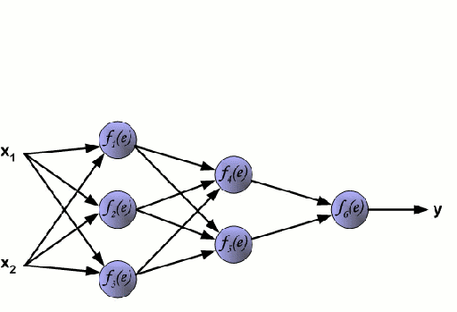

Abstract on the topic of graduation work
Content
- Introduction
- 1. Relevance of the topic
- 2. Face detection in video stream
- 3. Finding anthropometric points of the face
- 4. Normalization of detected faces
- 5. Classification of detected faces
- Conclusion
- List of sources
Introduction
The task of highlighting a person's face in a natural or artificial environment and subsequent identification has always been among the most priority tasks for researchers working in the field of systems machine vision and artificial intelligence. Facial recognition is one one of the most promising areas of machine learning. Systems recognition can be used for biometric contactless face identification, which greatly simplifies the procedure identity verification without presenting documents and optimizes operation of the relevant services. The systems in question may fraction of a second to identify a person in a crowd. Usage deep machine learning for face recognition demonstrates great results. For several years now, this technology has been active used to identify not only persons, but almost all items in the image. It is used for biometric contactless identification by face, which will greatly simplify identity verification procedure without presenting documents and optimizes the performance of related services.
This article discusses one of the most productive technologies face recognition systems based on deep machine learning. The work of the created software tool consists of three main stages: face detection in the video data stream, its normalization and classification. The Python language was used to program the model.[1].
1. Relevance of the topic
Image processing has always been an active area of research. AT in the field of image processing, there are many improvements, innovations, developments and modifications. Currently scientific and practical activities in the field of computer vision is constantly expanding, filled with new ideas and developments. By according to experts, the average person can identify a familiar face in a crowd with 97.53% accuracy. But this less compared to modern algorithms that have achieved 99.8% accuracy. And in the last few years they have reached almost perfection[2]..
There are many ways to recognize a face: the flexible comparison method on graphs, neural networks, hidden Markov models, statistical methods and others. All of them deal with problems that affect the quality of recognition systems is a change in illumination, position head, face size, etc. In recent years, effective systems recognitions were built on the basis of convolutional neural networks. For to simplify the creation of recognition systems, several specialized libraries (TensorFlow, Keras) providing good tools for developers. To the latest version of the matlab package also included software tools for system development recognition [2].
Facial recognition technologies in one form or another are already developing a long time ago, but over the past decade or so In addition, there has been a significant leap in the development and training neural networks. This direction is already one of the most relevant and promising, along with the development of transmission technologies information, various kinds of cloud services and meaningful analysis large amounts of data.
2. Face detection in video stream
The purpose of the work is to develop our own face recognition system students.Among the open source products are OpenCV. It is a library of computer vision algorithms, processing images and general-purpose numerical algorithms. Can freely used for academic and commercial purposes, distributed under the terms of the BSD license.
To implement the face recognition program, one of the The most effective combination of face recognition algorithms is the algorithm for estimating landmarks (eng. Face Landmark Estimation, FLE) and histograms of directional gradients Gradients, H.O.G.). Describing the general algorithm of the program with Using this combination of algorithms, we can distinguish the following stages:
- Search for all faces in a photo.
- Recognition of every face, even if it is strangely turned, or if the lighting is poor.
- Identify unique facial features that distinguish one person from others, such as eye size, face shape, and so on.
- Compare the identified unique features of this person with all people whom the system already knows in order to understand who is depicted on a photo.
The histogram algorithm is used to search for faces in photographs directional gradients. The main idea of the algorithm is the assumption that the appearance and shape of an object in an image area can be described by intensity gradient distribution or direction edges. Their implementation can be done by separating images into small connected areas called cells, and calculation for each cell of the histogram of gradient directions or edge directions for pixels that are inside the cell. Combination of these histograms is called a descriptor. To increase accuracy local histograms are normalized by contrast. With this the goal is to calculate the measure of intensity on a larger fragment of the image, which is called a block and the resulting value is used for normalization. Normalized descriptors have better invariance with respect to illumination.
The histogram handle for directional gradients has several advantages over other descriptors. Since it works locally, method maintains the invariance of geometric and photometric transformations, except for the orientation of the object. Similar changes will only appear in large portions of the image. Moreover, how discovered by Dalal and Triggs, rough space partitioning, precise direction calculation and strong local photometric normalization allows you to ignore the movements of pedestrians if they maintain the vertical position of the body. So the descriptor histograms of directional gradients is a good tool finding people in images.
- use a special algorithm that finds reference points or areas of the face, and then selects the entire area of the face;
- apply neural network models trained on a huge volume data[4]. The scheme of the neural network is shown in Figure 1.
There are quite a lot of similar methods [5], and they can be divided into two categories:
- based on identifying the special traits of a person, who then try to detect programmatically;
- based on external signs, in which it is necessary to carry out stage of system training by processing test images.

Figure. 1. Diagram of a neural network
By the method of face detection by external signs, they try to find and identify regularities and properties of the face implicitly, applying the methods of mathematical statistics and machine learning. One of the options for face detection in in this case, the creation and training of a convolutional neural network model. Training requires a fairly large dataset containing photographs with and without faces. One of the most widespread and largest sets of such data - VGGFace2. The images it contains (more than 3 million) are collected from the Google images database and quite significantly vary in position, lighting, etc. Set freely distributed for commercial and research purposes. AT This work uses DlibResNet [6]. This model is a ResNet network with 29 convolutional layers. Basis for The collection of VGGFace2 faces served as training. Network training started with randomly initialized weights and used a structured a loss function that tries to project all identities into non-intersecting circles with a radius of 0.6. After the model was tested with the publicly available LFW face detection test (eng. Labeled Faces in the Wild can be translated as “faces marked in the natural environment). The trained model received an average error 0.993833 with a standard deviation of 0.00272732 which is very a good indicator[7].
3. Finding anthropometric points of the face
After finding the face, it is necessary to determine in which direction it rotated, and bring it to a general view for further analysis, because a face turned in different directions is a face of the same human[8].
The most common method of bringing a face to a general view is landmark estimation algorithm.
The main idea is that we will mark 68 special points (called landmarks) that exist on every face - the upper part of the chin, the outer point of each eye, the inner point of each eyebrows, etc. Figure 4 shows a general view of the location of the points.

Figure. 2. General view of the location of points
After defining the points, you need to change the image so that the eyes and mouth were as well centered as possible. For such transformations, affine transformations are used, that is, such transformations in which all lines remain parallel outside depending on the method of transformation (distortion, rotation, scaling).
As a result of the transformation, regardless of how the face is turned on the original image, the neural network will receive an input image with the same position of the main parts of the human face.
The simplest approach to face recognition is to direct comparison of the unknown face found in step 2, with all the images of people that have already been tagged before. If a will find a previously tagged face that is very similar to recognizable face, it is probably the same person. But this approach has a big problem. Comparison of all previously noted faces with each new uploaded image takes too much time, while faces should be recognized in milliseconds, and not for hours. An efficient way to optimize comparison is transition from comparing the entire image to comparing individual measurements, such as the size of the ears, the distance between the eyes, etc. Further.
The choice of parts necessary for measurement can be assigned to the neural net. Deep learning determines which parts of the face need to be measured, better than humans.
4. Normalization of detected faces
After defining the points, you need to change the image so that the eyes and mouth were as well centered as possible. For such transformations, affine transformations are used, that is, such transformations in which all lines remain parallel outside depending on the method of transformation (distortion, rotation, scaling)[9]..
Facial recognition is most affected by:
- screen orientation,
- lighting,
- covered by other objects.
Piecewise affine deformation allows you to normalize changes in posture. Deformation is applied to triangular elements defined by models of the improved active appearance described below (Fig. 3)

Figure 3. The process of aligning (or "rotating") a face using affine deformations
Such a transformation helps to increase the recognition accuracy by 5–7 %.
5. Classification of detected faces
The main component for the classification of detected faces will be face descriptor extraction using the trained model function. At software development, the authors of the article applied the model, which retrieves the face descriptor using the previously discovered anthropometric points. The last step is to find a person in the database because to classify faces, a database (DB) is needed, containing descriptors of faces that will be compared with the descriptor face detected on the stream frame. To search for an image, train a small reference network using a classification algorithm, for example, the support vector machine.
The main idea of the method is to translate the original vectors into higher-dimensional space and the search for a separating the hyperplane with the largest gap in this space. Two parallel hyperplanes are constructed on both sides of the hyperplane, separating classes. The separating hyperplane is the hyperplane which creates the greatest distance to two parallel hyperplanes. The algorithm is based on the assumption that the greater the difference or distance between these parallel hyperplanes, the smaller will be the average classifier error[10].
Given a dataset with face descriptors and a face descriptor with video stream, you can determine whether a given person belongs to persons whose descriptors are stored in the database. For this, the Euclidean is calculated distance between two descriptors. According to the Dlib documentation, if Euclidean distance is less than 0.6, then in the photographs - the same human. However, during testing of the application, it was noticed that when at this threshold, the face of a person in the frame is sometimes classified not properly. Therefore, it was decided to lower the indicated threshold to 0.587. At This value does not indicate errors in the definition of the face.
After performing the above steps, the face is highlighted on the frame from a stream that takes two coordinates of the one found in the image faces, as well as defining the thickness and color of the frame in RGB format. Then with using the function, the name is displayed and a mask is applied to the face with anthropometric points. For this, a cycle is used in which the detected points are placed on the image. Finally, the image output to the video stream, and the above steps are repeated to next frame.
Conclusion
As a result of the work carried out using the programming language Python created software that receives input video stream, considers it frame by frame and performs actions needed to identify a person in a video stream.
The software meets the following requirements:
- full performance;
- output of all necessary information;
- support for a graphical interface that broadcasts video stream;
- selection of the detected face and output of information about the person;
- the possibility of demonstrating the anthropometric points of the detected faces.
List of sources
- Muller, A. Introduction to machine learning with Python / A. Müller, S. Guido. - Moscow: Williams, 2017. - 480 p.
- Habr [Electronic resource] - Access mode: https://habr.com/ru/company/droider/blog/568764/ -Head. With screen.
- Brilyuk D.V., Starovoitov V.V. Recognition of a person by facial imaging using neural network methods - 2002. - no. 1. - p. 4-11. - URL: http://uiip.bas‑net.by/structure/l_ori/starovoitov/Starovoitov_Publication_section/11_Starovoitov02prep.pdf.
- Grace, J. Data Science. Data science from scratch / J. Gras. — St. Petersburg: BHVPeterburg, 2017. - 336 p.
- Forsythe, D. Computer Vision. Modern approach / D. Forsyth, J. Pons. - Moscow: Williams, 2004. - 928 p.
- Young scientist [Electronic resource] - Access mode: https://moluch.ru/archive/363/81355/ -Head. from the screen.
- Lutz, A. Learning Python / A. Lutz. - St. Petersburg : Symbol-Plus, 2011. - 1280 p.
- Medvedev A.S. The study of the program model of the convolutional neural network when recognizing faces in pictures from a video stream - Access mode: https://masters.donntu.ru/2018/fknt/medvedev/index.htm
- Convolutional Neural Network, Part 1: Structure, Topology, Functions activations and training set. [Electronic resource]. - Mode access: https://habr.com/ru/post/348000/
- Brilyuk D.V., Starovoitov V.V. Recognition of a person by facial imaging using neural network methods - 2002. - no. 1. - p. 4-11. - URL: http://uiip.bas-net.by/structure/l_ori/starovoitov/Starovoitov_Publication_section/11_Starovoitov02prep.pdf.